It’s a land of blue and green: the blue of the water - ocean, bays, estuaries, inlets, rivers and creeks; and the green of the trees - cedar, fir, hemlock, balsam, alder and spruce, all fed by abundant rainfall. It’s along the Pacific Coast of North America, from San Francisco up to Vancouver Island, British Columbia. And it’s in this relatively small geographical area that I discovered most of the buildings featured in this article and in my new book, Builders of the Pacific Coast.
The quality of design, imagination and craftsmanship in this part of the world is astounding. Over a two-year period, I made four trips of about three weeks each, with cameras and notebooks, shooting these photos and talking to builders.
Specific locations usually aren’t given, in order to preserve the homeowners’ privacy. Suffice to say, it’s a coastal marine environment, latitudes 37 to 49 degrees, with boats everywhere. Many of these buildings can be reached only by water. You get to the islands by ferries.
Due to significant rainfall and fast-growing forests, there’s a large amount of wood available for building. Its abundance (although more so 30 years ago than today) has given many of these builders the material and inspiration to create these structures. A lot of the wood used in these buildings came off the beach, or at least from very close by.
About 80 percent of the builders featured in this book are Canadian. Some are Americans who emigrated to Canada to avoid being drafted for the war in Vietnam.
Many of these buildings were constructed in the ’70s and ’80s, some in the ’60s, a singular period in North American history. This group of builders, the types inspired by the Whole Earth Catalog, were acting out their dreams. You could live on very little money, land was cheap and building codes few. It was a period not likely to be duplicated, a 20- to 30-year span of inspiration, freedom and spirit manifested in a number of handmade homes.
Much of this, by the way, was green building 30 to 40 years before it became “Green Building.” This type of building is all about using natural and sustainable materials. Practicality. Small-scale technology. Power from sun, wind and water where possible. Fitting buildings into natural surroundings. Working with one’s hands.
I grew up on the Pacific Coast, so I felt at home in this region. In fact, when I made these trips, not only was the territory familiar, but people shared many of my interests: building, growing food, fishing, using natural materials, renewable energy, doing as much for yourself as possible, treating nature with respect, beachcombing - just to name a few. I had a wonderful time. I camped out on beaches, in the woods or in my truck, sometimes staying with the builders or in motels. I made a lot of new friends. Each trip was an adventure.
A lot of the homes I visited I found by chance. I followed up on referrals. The owners were around or they weren’t; houses were accessible, or not. I’d see buildings while driving down the road. There’s a great deal of randomness here. It wasn’t tightly planned and it’s not comprehensive, even for this small area.
“Why these buildings?” People often ask me this. Here’s what I look for:
I love going down new roads, hunting for buildings. As I drive, I’m constantly thinking about showing people what I find. So come along and ride shotgun with me, going down these roads, riding the ferries, walking the beaches, talking to these builders, and seeing their creations. I’ve found many inspiring, handmade homes in my travels to this land of blue and green, of water and wood.
|
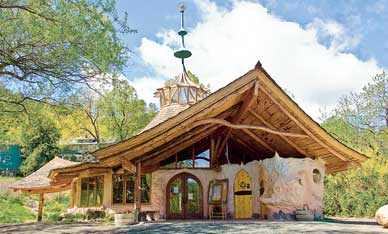 COURTESY LLOYD KAHN This temple in Northern California is similar in design to a yurt, a housing design associated with Mongolia. |
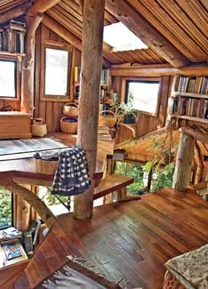 COURTESY LLOYD KAHN What inspired these unique buildings? One common theme is that they use wood, and lots of it. In their coastal marine environment, trees are abundant, and so is driftwood. |
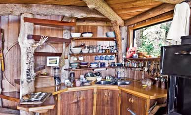 COURTESY LLOYD KAHN The kitchen of a seaside homestead built primarily from driftwood. |
|
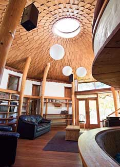 COURTESY LLOYD KAHN A light and airy living room, designed as the main gathering space for a family of six. |
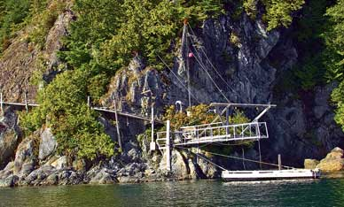 COURTESY LLOYD KAHN A cliff-hanging homestead on the rocky coast of Vancouver Island. |
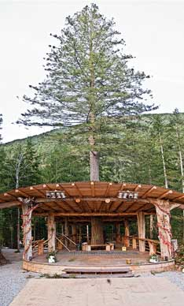 COURTESY LLOYD KAHN An amphitheater in British Columbia. |
|
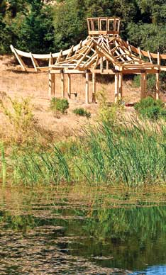 COURTESY LLOYD KAHN A temple under construction in northern California. |
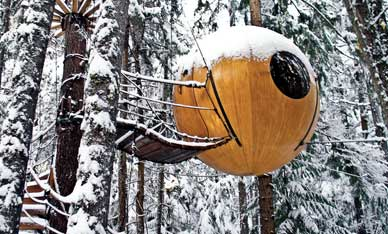 COURTESY LLOYD KAHN An elegant spherical treehouse. |
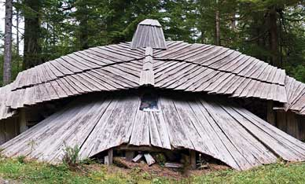 COURTESY LLOYD KAHN A woodshed designed to resemble an eagle. |
|
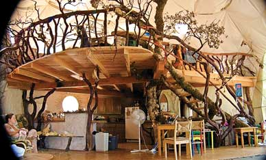 COURTESY LLOYD KAHN A loft built inside a geodesic dome home. |
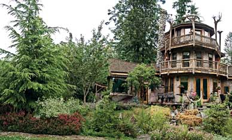 COURTESY LLOYD KAHN “The Buddha House” found in Northwest Washington state. |
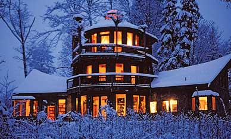 COURTESY LLOYD KAHN Another view of the Buddha House. |
|
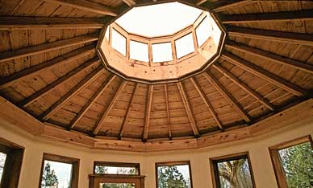 COURTESY LLOYD KAHN An interior look at the Buddha House dome. |
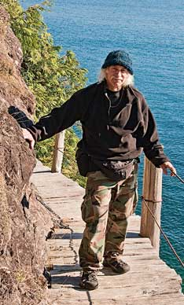 COURTESY LLOYD KAHN The indefatigable author, Lloyd Kahn. |
|